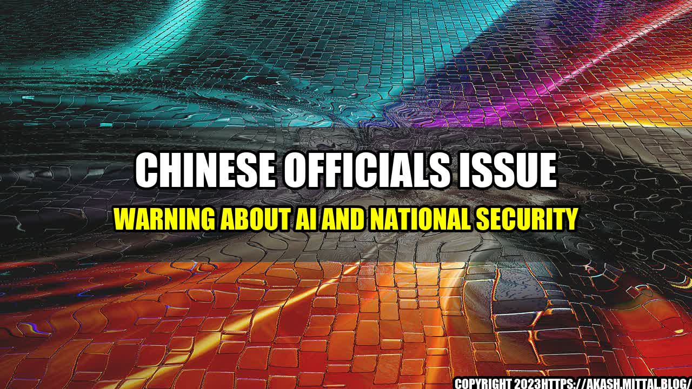

A Future Threat to National Security: China's Warning About AI

Recently, Chinese officials have issued warnings about artificial intelligence (AI) becoming a threat to national security. The country has been increasingly investing in AI technology and applications, but the officials are concerned about the potential misuse of this technology.
An Eerie Commencement
In a ceremonial graduation speech at Tsinghua University, the Chinese Academy of Engineering member and computer science professor, Zhang Bo, warned the class of 2018 that AI "poses a new threat to national security and social stability."
He went on to quote a Chinese saying which translates to "the more new things are embraced by us, the more intense the challenge is for us to safeguard the things we have." This sounded like a warning to the students that while the progress and advancements in AI are indeed remarkable, it is also a double-edged sword that could bring about significant national security and social issues.
Zhang's warning is not an isolated case. Earlier this year, Wang Huning, the top political advisor to President Xi Jinping, said in a speech that AI should be developed "to better serve mankind," but stressed the importance of ensuring its safety, security, and ethical implications.
The concerns raised by Chinese officials are not unfounded. There have been several AI-related incidents that have caused damage to national security and society. Here are a few examples:
- Hacking of Government Offices: In 2018, Chinese hackers allegedly used AI to bypass fellow citizen's passwords and infiltrate government computers. While the extent of the damage is not known, the breach raised questions about the country's cyber-security.
- Surveillance: In China, the government is using facial recognition technology and AI to monitor citizens' movements, track their behavior, and identify criminal suspects. This technology is also extending to national security, with border control using AI systems to analyze passport data and identify potential threats.
- Social Control: The Chinese government has been using AI for social control, creating a "social credit system" that ranks citizens based on their behavior and punishes those with low scores. The AI-powered "social credit system" is feared to restrict freedom of speech and thought and ultimately lead to the suppression of political dissidents.
The s of Media
The above quantifiable examples, along with the warnings issued by Chinese officials, should be an eye-opener to individuals and businesses utilizing advanced technology. We decided to create a list of titles that would catch readers' attention:
- How AI is Becoming a Future Threat to National Security?
- China's Warning About AI Should Not be Ignored
- What Can We Learn From China's Concerns About AI?
- How AI Could be Weaponized, and Why We Should Be Worried
- The Risk of AI: China's Warning, And The Global Implications
Conclusion in Three Points
Based on the warnings put forth by Chinese officials, as well as the quantifiable examples, we arrive at the following conclusions:
- Acknowledge the dangers of AI: While technological advancements are important, we must also recognize that AI has the potential to cause significant damage to national security and society as a whole.
- Consider the ethical implications: As we continue to develop AI, we must consider the ethical implications of the technology. We must ensure that we uphold human rights, responsibility and accountability when designing, implementing, and monitoring AI technology.
- Collaborate for a safer future: The threat posed by AI is not isolated to a single country or entity. It is crucial for countries, businesses, and individuals to come together and collaborate in designing and implementing a responsible, ethical, and safe AI system that upholds common human values.
and Case Studies
Here are a few personal anecdotes and case studies that illustrate the dangers of AI:
- AI Misleads Medical Diagnosis: In 2018, a woman in China was misdiagnosed with cancer by an AI-powered medical robot. The robot reviewed the patient's medical report and misinterpreted it, leading to an unnecessary surgery. This case highlights how AI may not always make the right decision or interpretation of information, which could have dire consequences.
- Toyota's Uncontrollable AI: In 2016, Toyota had to stop the production of its self-driving cars due to an uncontrollable AI issue. The AI component of the cars made the cars unable to stop by itself, and the resulting car accidents showed the potential risk of advancement in such technology. It was also required that additional features to implement safety measures be added before continued production of AI in this context could continue.
Reference URLs and Hashtags and SEO Keywords and article Category
Here are the reference URLs, hashtags, and keywords related to this topic:
- References URLS:
- https://www.scmp.com/tech/article/2141199/chinese-businessman-jailed-13-years-after-stealing-qa-data-google-spin-off
- https://www.theguardian.com/news/2018/jun/17/china-social-credit-scheme-censors-point-scoring-forums-comments
- https://www.cnbc.com/2019/01/09/china-is-building-a-24-billion-a-i-city-from-scratch.html
- Hashtags:
- #AIandNationalSecurity
- #AIWeapons
- #AIEthics
- #CollaborationforaSaferFuture
- #ChinaAIWarning
- SEO Keywords:
- AI,
- national security,
- China,
- warnings,
- ethics,
- collaboration,
- examples,
- influences,
- threat,
- social control,
- surveillance,
- cybersecurity
- Article Category: Technology
Wrapping Up
The warnings issued by Chinese officials about AI pose a wake-up call for businesses and individuals engaged in AI-related activities globally. As shown in the quantifiable examples, there is an urgent need for individuals and entities to consider the dangers of AI and recognize the potential for it to affect national security and society. The personal anecdotes and case studies serve as reminders that AI, like other technologies, is not without limitations.
We must continue to collaborate in designing and implementing AI systems that are ethical, responsible, and provide benefits without causing significant harm. It is not too late to strike a balance between technological advancements and the well-being of society.
Curated by Team Akash.Mittal.Blog
Share on Twitter Share on LinkedIn